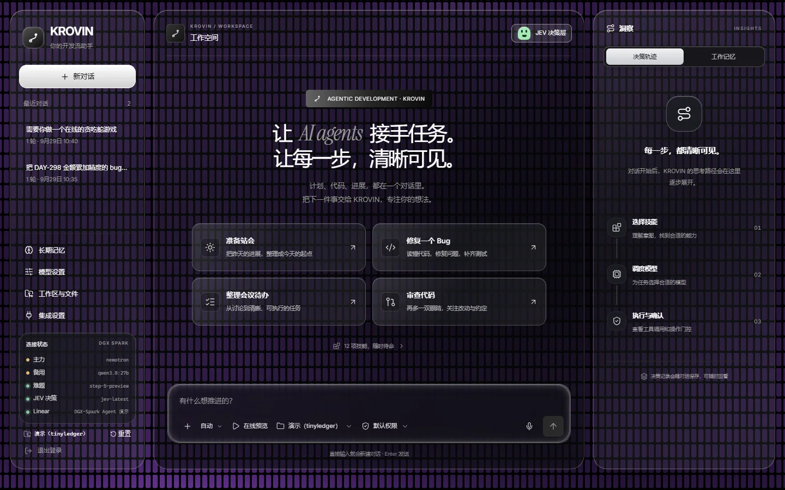
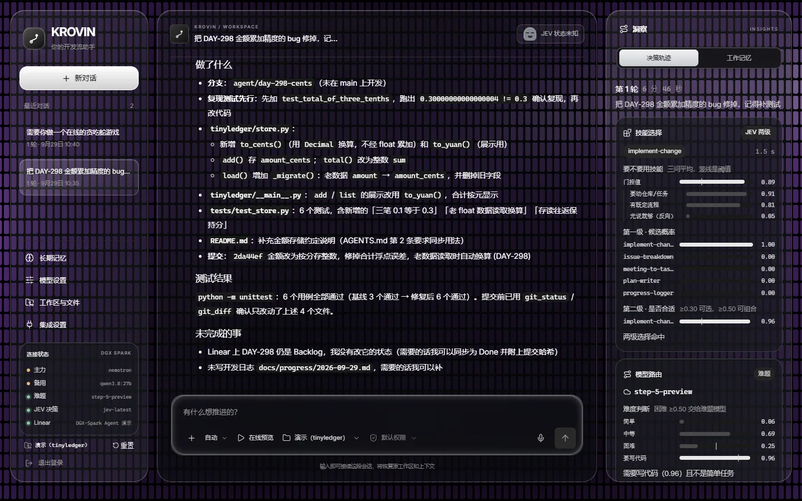

DGX SPARK HACKATHON · 2026
让每一次「AI 替人动手」，
都先给人看明白。
Every time an AI acts for you, you see it first.
KROVIN 是跑在 NVIDIA DGX Spark 上的开发流 Agent：读 Linear issue、Obsidian 纪要和你的口述，完成「拆解 → 计划 → 开发 → 写日志 → 同步状态」。每一步「选哪个」——技能、模型、工具、记忆——都交给 JEV 决策层，并写进可度量的决策轨迹。 KROVIN is a dev-flow agent running on NVIDIA DGX Spark. It reads Linear issues, Obsidian notes and what you tell it, then breaks down, plans, codes, logs and syncs status. Every “which one” choice (skill, model, tool, memory) goes to the JEV decision layer and is written into a measurable decision trace.

为什么做Why
难点常常发生在写代码之前。The hard part usually comes before the code.
该选「实现改动」还是先写计划？该用 Spark 上的本地模型，还是把复杂步骤交给云端？一条旧纪要要不要带进上下文？碰到 Linear 更新，谁来按确认？Should it implement the change or write a plan first? Use the local model on the Spark, or hand the hard step to the cloud? Should an old meeting note enter the context? When Linear is about to change, who presses confirm?
我们没有让一个模型把这些问题混在一段话里猜，而是把每个「选哪个」拆成独立的结构化判断，逐个打分、逐个记录。We did not let one model guess at all of this in a single paragraph. Each “which one” became its own structured judgment, scored and recorded one by one.
AI 准备替人做事的时候，人到底能不能看明白它要做什么。When an AI is about to act for you, can you actually tell what it is going to do?—— 参赛征文《黑客松十日谈》— from the team's essay (zh)
决策可见Decisions are visible
技能两级概率、路由难度、记忆精选、每步门控，全部在右栏轨迹里能翻。Two-level skill probabilities, routing difficulty, memory picks and per-step gates all live in the trace column.
写操作先问人Writes ask first
改文件、改 Linear 之前弹确认卡；拒绝之后 agent 不绕路。File and Linear writes raise a confirm card; after a “no”, the agent does not route around it.
宁可少说，不虚标Claim less, not more
没验证的组件不画进架构图，数字都标明样本与口径。Unverified parts stay off the architecture diagram; numbers carry their sample and basis.
一轮对话怎么走One turn, end to end
从一句话到一次可审计的执行From one sentence to an auditable run
点左边的步骤。右边的分数取自一次真实任务「修掉 DAY-298 金额累加精度的 bug」的轨迹。Click a step. The scores on the right come from a real run: “fix the DAY-298 money-summing precision bug”.
模型分工Model tiers
本地跑日常，难题再出门Local for the everyday, cloud only for the hard
像 OpenCode 那样登记任何 OpenAI 兼容的供应商，再给三个分工位各选一个模型。「私有」开关决定隐私边界：只有私有模型能看到隐私记忆。Register any OpenAI-compatible provider, then assign one model to each of the three slots. A “private” flag sets the privacy boundary: only private models can see private memory.
主力Main
DGX Spark 上的 vLLM，日常任务都交给它，摘要和记忆整理也由它来做。在节点上对两道代码题实测约 80 tok/s（样本很小，只当一次性能观察）。vLLM on the DGX Spark. Handles everyday work, plus summaries and memory upkeep. About 80 tok/s measured on two coding prompts, a tiny sample, so treat it as one observation.
备用Backup
主力连不上时顶上。同一批测试里它大约 11–13 tok/s，所以只做兜底。Steps in when the main model is unreachable. Roughly 11–13 tok/s in the same test, so it is a fallback only.
难题Hard
JEV 判断为难题（要写代码、非简单任务），或主力连续出错时升级到它。外部服务打开「经操作机代理出境」后才可达。Used when JEV rates a task hard (needs code, not simple) or the main model keeps failing. Reached through the operator-machine proxy.
JEV 决策层The JEV layer
五类「选哪个」，各自打分、各自留痕Five “which one” choices, each scored and logged
JEV 给的是判断，不替主模型生成整篇答案。每个分数旁边都标着阈值，哪个值越大意味着什么，在配置里写成注释。JEV returns judgments, not the full answer. Every score is shown next to its threshold, and the direction of each threshold is documented in config.
技能选择Skill selection
两级：先问要不要用技能，再问选中的是否合适。Two levels: should a skill be used, then does the chosen one fit.
模型路由Model routing
简单 / 中等 / 困难 / 要写代码，四个维度给难度打分。Difficulty scored on four axes: simple, medium, hard, needs code.
工具门控Tool gating
每次写操作前问两句：是不是合理步骤？会不会顺带改无关内容？Before each write: is it a reasonable step, and might it touch something unrelated?
记忆精选Memory picks
只把相关的长期记忆放进上下文，隐私记忆只给私有模型。Only relevant long-term memory enters context; private memory only goes to private models.
上下文压缩Context compaction
每次调用模型前检查预算，保存检查点，中断后可接续。Budget checked before each model call, with checkpoints so a session can resume.

上图：修 DAY-298 的真实一轮。先复现 0.30000000000000004 != 0.3，再改代码；测试从 3 个通过到 6 个通过；用时 6 分 46 秒；没有动 Linear 状态。Above: a real run fixing DAY-298. It reproduced 0.30000000000000004 != 0.3 first, then changed code; tests went from 3 passing to 6; it took 6 min 46 s and left Linear's status alone.
守门Guardrails
那个确认框出现的时候，先别急着点When the confirm box appears, don't rush the click
下面是个可点的示意。真实面板里的确认卡先用一句人话说清「要做什么」和「JEV 怎么看」，原始参数折叠在下面。A clickable sketch below. In the real panel the card first says in plain words what is about to happen and what JEV thinks; raw parameters are folded away.
⚠ 要改动文件，确认一下About to change files. Confirm?
run_skill_script 本地写local write两句话问门控，而不是一句Two gate questions, not one
只问「合不合适」时，合法操作最低分 0.16、越界操作最高分 0.17，几乎贴在一起。拆成「是不是合理步骤」和「会不会顺带删改无关内容」后，9 条标定用例有 7 条符合预期，3 个破坏性改动都被拦下。样本很小，只说明方向。With a single “is this appropriate” question, the lowest legitimate score was 0.16 and the highest out-of-scope one 0.17, nearly touching. Split into “is it a reasonable step” and “might it touch unrelated content”, 7 of 9 calibration cases matched and all 3 destructive edits were blocked. A small sample; it shows direction only.
硬边界不随「全自动」改变Hard limits survive “auto” mode
全自动（yolo）只是把确认交给 JEV 自动决定。技能白名单、路径沙箱、命令白名单、Linear 范围、agent 不 push，一条都不放开。Auto mode only hands the confirmation to JEV. The skill allowlist, path sandbox, command allowlist, Linear scope and “the agent never pushes” all stay.
代码跑在 OpenShell 沙箱里Code runs in an OpenShell sandbox
NVIDIA OpenShell 容器：网络只放行策略里列出的软件源，系统目录只读、非 root，只有沙箱内目录可写。An NVIDIA OpenShell container: network only to allowlisted package sources, read-only system paths, non-root, writes only inside the sandbox.
Skills
12 项开发流技能Twelve dev-flow skills
每个技能是一份 SKILL.md，渐进式披露：先给 JEV 看描述，选中后才加载正文。绿色标签表示只读。Each skill is one SKILL.md, progressively disclosed: JEV reads the description first, the body loads only if chosen. Green marks read-only.
演示Demo
74 秒看完一轮One turn in 74 seconds
如实说明Straight talk
哪些数字能信到什么程度How far each number can be trusted
88.5% → 100%是训练集结果is a training-set result
26 条技能选择任务的 A/B：主模型自选 88.5%，加 JEV 并调阈值后 100%。阈值就在同一套题上调出来，不能说遇到新任务也有 100%；JEV 还要付出延迟和 token 开销。26 skill-selection tasks, A/B: the model choosing alone scored 88.5%; with JEV and tuned thresholds, 100%. The thresholds were tuned on the same set, so it does not predict new tasks, and JEV costs latency and tokens.
~80 tok/s只测了两道题from two prompts
跑得快不等于想得对。这是一次性能观察，不是复杂规划质量的结论。Fast is not the same as right. This is a throughput observation, not a verdict on planning quality.
offline评审期面板已下线The judging-period panel is down
比赛结束后，评审期间的在线面板已无法访问。本页截图来自本机运行的同一前端，演示视频是当时的录屏。After the hackathon the judging-period panel stopped being reachable. Screenshots here come from the same front end running locally; the video is the original recording.
tunnel曾依赖一台在线的操作机It relied on an online operator machine
节点直连不了境外，JEV 和 Linear 经 SSH 反向隧道走操作机代理，所以评审期间操作机必须开着。数小时连续运行也没有实测。The node could not reach abroad directly; JEV and Linear went through an SSH reverse tunnel to the operator machine, which had to stay on. Multi-hour continuous runs were not tested.